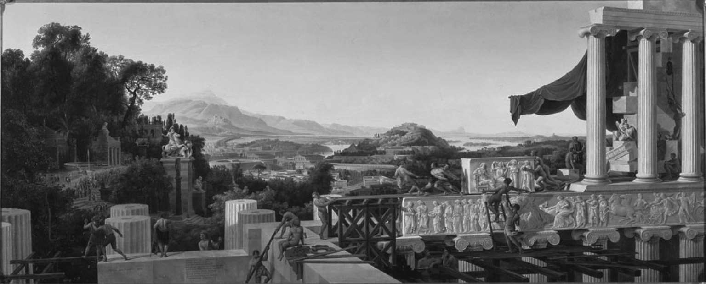

1781年是不同寻常的一年。出版物中，除了《强盗》之外还有另一部作品注定要对德国文化产生更深入、更广泛的影响：伊曼努尔·康德（1724—1804）的《纯粹理性批判》。“没有哪位学者，”歌德后来写道，“能够不受惩罚地拒绝、反对或轻视由康德开启的伟大哲学运动。”在狂飙突进文学运动中康德经历了危机，但和作家们不同的是，他在18世纪70年代没有出版任何作品，而只是思考和写作。他可以自由地这么做，是因为在1770年，在当了15年沃尔夫派的私人教师之后，他终于被聘为柯尼斯堡大学的一名受薪教授。但是大约在同一时间，他受到大卫·休谟极端怀疑的经验主义的挑战，它似乎让他对自己迄今为止全心投入的工作产生了疑虑。在此后十年的思考中，康德努力调和资产阶级的经验主义启蒙和官僚的理性主义启蒙，他将两者的融合体命名为观念论。康德相信他已经表明，莱布尼茨—沃尔夫所示的万物的理性秩序之类，是由我们的感官能认识的世界暗示或预设的：我们无法直接知道那个秩序，因为它根本就是我们能够认知事物的前提条件，但是它提供了理想或模式，让我们把自己确实知道的东西与之相连。知识必须兼有经验的内容和理性的形式。康德通过重新审视我们在主观与客观（在他有生之年的德国学术哲学中这些术语获得了现代意义）之间的经验联系取得了这一成果，他把它和哥白尼在天文学上的革命相提并论。正如哥白尼主张，我们能看到天空中的运动，并不是因为星星在运动，而是因为地球在运动，康德也暗示，他已经表明，不用改变自然或道德世界的外观，世界的一些基本特征应归因于观察者，而不是被观察者，应归因于主观，而不是客观。我们无法知道事物自身，我们只能通过我们的知觉和智力器官认识它展现给我们的样子，并在此过程中追求一个必要且合理的结构。康德在知识理论中仔细地平衡了对感性和特殊的要求与对理性和普遍的要求。同样地，他在道德理论中平衡了明显极端个人主义者的断言（只有能自决的动作者不受外部影响的自由行动才能算作道德的）与语气同样强烈的断言（自由不是让人想做什么就做什么的自由，而是强加给自己一条普遍法律的自由）。两种不同的启蒙运动之间的这种微妙的妥协提供了一个意识形态基础，在此基础上，德国官僚阶级成员可以声称，他们代表和协调了富有经济生产力的中产阶级和他们所服务的专制君主或国家之间的利益。到18世纪90年代中期，康德派已经在德国大学的哲学教席中完全取代了沃尔夫派。官场文化的霸权时代即哲学观念论的时代是德国文学最具特色的时期，即古典主义时期。
1781年还有另一个里程碑式的事件：莱辛去世了。他迁居沃尔芬比特尔后的生活预示着即将来临的命运。他针对《新约》发表的一份详尽的批评手稿遗留在前任图书馆管理员手上，导致了与路德宗上层集团的激烈争论，从神学问题扩展到新闻自由，争论突然被他的主君兼雇主不伦瑞克公爵下令终止。莱辛的回应是将冲突转移到不太明显的领域。他回到戏剧，在《智者纳旦》（1779）中创造了一种全新的戏剧模式，他称之为“戏剧诗”。因为它是用无韵诗写就的，并以书的形式出版，他没有期望把它搬上剧院舞台。这是一部喜剧，背景设置在十字军东征时期的耶路撒冷，旨在彰显犹太教、基督教和伊斯兰教的代表互相宽容而取得的成就。他们事实上承认，他们都信仰着第四种理性的宗教，它不去评判任何一种公认的信仰的真相，而是对那些“足以被称为人的人”形成了一种秘密的、本能的同情。《智者纳旦》是德国此后一百年“古典”戏剧的原型：诗行体戏剧（写出来既是要上演，也同样用于阅读）、哲学或道德的主题（用来重新阐释一个神学问题或使其世俗化）和精英的诉求（取代普遍的呼吁—《智者纳旦》是关于精英主义的，剧中的主要角色象征了就此创立的戏剧类型的受众）。
莱辛从自由作家到公爵雇员的发展与席勒继《强盗》成功之后的职业生涯相似。面对之前强迫他离开神学转而成为军医现在又全面禁止他继续写作的符腾堡州专制公爵，席勒逃离他的家乡去往曼海姆，留在最初上演他作品的剧院成为一名常驻作家。他又写了两个关于反抗和政治继承问题的剧本，其一是《阴谋与爱情》（1784），用伦茨专门研究过的当代德国素材创作出了效果显著的戏剧。在一段叙述性的次要情节，即与过时的英国崇拜进行悲剧性的告别中，男主人公发现公爵的英国情妇并不如他所想的那样是个服务于暴政的堕落女仆（公爵已经把他的臣民当作雇佣兵卖给了美国战争），在她身上他看到了一种他注定无法享受的自由的精神。尽管在曼海姆的工作合同没有续约，席勒还是决心继续尝试以文学、杂志编辑和历史作品创作来谋生，在此期间，他努力使他的下一部戏剧《唐·卡洛斯》（1787）成形，这是一部宏伟的、极其复杂的诗体历史剧。他依靠莱比锡和德累斯顿的朋友们的慷慨救助才免于贫困潦倒。他把手试探地伸向魏玛，他的未婚妻在那里长大。1789年，部分地依赖歌德的帮助，他在附近的耶拿大学获得了无薪的历史学教授教席，并从卡尔·奥古斯特公爵那儿得到一份微薄的津贴，足够他成婚。过度的劳累损害了他的健康，此时，来自丹麦王储的一份更为丰厚的资助使他能够专心投入对康德的研究，他自己也暂时变成了一位哲学家。令席勒感到失望的是，康德没有一套美学理论可以赋予他在各个方面倾尽一生的文学以适当的尊严和意义。（康德有一个很好的理由来解释为什么没有这样一套理论：他认为，依照定义，没有什么能比道德更重要，做对的事情和他关于美所说的一切，只是为了防止被“诗人是‘创造者’”、“天才‘近乎神’”这样的说法引发的从美学语言向道德和神学语言的滑落。）借用一个在歌德圈内常见的比喻，席勒开始把文学当作一种“艺术”来对待，进行了一系列研究，其中著名的有《审美教育书简》（1795）。他发展了一套关于美的系统化的阐释，美是道德自由的感性表现，所以艺术家是道德的解放者，也是人类的教育者。他带着这套讨人喜欢的理论去接近迄今为止和他保持距离的歌德，提议他们共同创办一份新的文学杂志《季节女神》（1795—1797）。
《强盗》把德国看作一个无望和充满无效冲突的地方，歌德起初在它的作者身上看到他1775年来到魏玛时曾试图逃离的一切。但是他们不同的发展却引领他们走上了趋同的道路。歌德已经完全和商业图书交易切断联系（他帮盗版商赚了不少钱，却没有给自己挣到一分钱），开始了在魏玛的生活。有十年之久，他几乎没有发表任何东西，而是让自己投身于行政和宫廷生活的小世界中（他成了一名枢密院成员，被封了贵族），并和他的朋友兼赞助人—年轻的公爵形成了半辅导的关系。他继续写作，然而除了戏剧《陶里斯岛的伊菲革涅亚》（1779，1786—
1787）的初版外，几乎没什么作品问世。这部戏剧以散文体创作，却用了被戈特舍德赞许的法国宫廷剧的形式，展示了万物皆善的坚定信仰所具有的治愈力量。他认真地遵从这种信仰，此时的公国似乎受到挤压，无法改革，他的诗歌创作也几近枯竭。
然而在1786年，他在绝望中爆发了：他实现了毕生的野心，追随温克尔曼去罗马旅行，然后他签订了一份出版作品全集的合同，回到了出版业。在接下来的几年中，他彻底改变了在魏玛的行事习惯，撤回原先对宫廷的全部承诺，并重新权衡了他与中产阶级读书公众的关系。他对罗马的访问变成了为期两年的公休假，在此期间他享受了意大利的艺术和美景，以及德国艺术家聚居地的生活，最后不情不愿地离开那里回了国；他说服公爵解除他的行政职务，首先把他“作为诗人”对待；他履行自己的义务，写完了《埃格蒙特》和第一部以诗人为主角的悲剧《托夸多·塔索》，并把《陶里斯岛的伊菲革涅亚》改写为流畅的无韵诗；让冠盖满城的魏玛惊恐的是，他开始与一位中产阶级女子克里斯蒂安娜·武尔皮乌斯（1765—1816）共同生活，她为他生了几个孩子，其中只有一个儿子幸存下来。不过，歌德除了自己私人的财路外，仍然依赖卡尔·奥古斯特支付的薪水，公爵希望这笔钱能换来一些东西，就让他的诗人自1791年起掌管剧院。歌德履行了他的职责，但心情十分矛盾。戏剧在狂飙突进时期曾是他的工具，如今他已将其放下。在他近来终于致力于通过印刷图书接触到更广大的受众时，戏剧作为宫廷娱乐已经对他没有多少吸引力了。现在吸引他的公国机构是耶拿大学，不久前约翰·戈特利布·费希特（1762—1814）和席勒在那里就职，耶拿大学继柯尼斯堡之后成为康德派的主要中心。席勒的合作建议恰逢其时。
他的计划雄心勃勃。他终于找到了能付给作者良好报酬的出版商—斯图加特商人约翰·弗里德里希·科塔（1764—1832）。在科塔的支持下，席勒打算从宫廷和大学邀请全德国的大人物，给他们提供发行量足以媲美维兰德的《德意志信使》的出版途径。他正在为官僚的精英文化写审美教育理论，这样的精英文化将与商业和专业阶层的量产化市场发生碰撞：德语世界将迎来一种统一的文学，既复杂精妙又通俗流行的文学。1795年在强烈的好奇心驱使下创办的《季节女神》第一次把歌德和席勒这两个名字连接起来，但该刊两年后就偃旗息鼓了。它本质上是失败的，因为它对大家都想读到的一个领域闭口不谈：政治，尤其是法国大革命。这个限制是不可避免的，假如允许讨论政治，就泄露了该刊试图团结的中产阶级两翼之间深刻的利益分歧。随着杂志的失败，这条鸿沟还是显露了，对它的认识成为官方文学的一个永久特征：汇集了讽刺短诗的《箴言集》（1796）是歌德和席勒向商业图书市场的一场复仇，开创了一直延续至今的批判资产阶级公众的传统。
歌德可能不会对《季节女神》的命运感到惊讶。在同一时间，他的小说《威廉·迈斯特的学习时代》（1795—1796）也遭受了冷遇。他感觉到德国文学的未来在受到新哲学启发的新一代身上。这一代人，无论他们是否承认，都不能依靠大众来分担他们的忧虑。十年来，年轻的知识分子们，尤其是那些希望作为国家公仆成就事业的人，把康德的哲学革命视为代替法国政治革命的德国的道德选择，并指望用康德主义重新阐释或取代被启蒙运动动摇的宗教信仰。《威廉·迈斯特的学习时代》是为他们写的，尽管它比他们可能愿意学习的东西更具有令人不安的革命性意义。它讲述了一个从相信文学和戏剧具有变革力量的狂飙突进幻象中解放出来的故事，一个年轻人原本认为他的生活被诸如天意或命运之类的外部力量所掌握，后来他摆脱了这一虚假信念，认识到他必须为自己创造意义。歌德认识到，无论表面上如何和谐，哲学的唯心主义是建立在自我确证的基础上的，这种自我确证深入地破坏了我们与我们的历史和自然起源的关系。从这个意义上说，它确实是在法国采取政治形式的同一场革命的一部分。随着革命的军事后果逐渐席卷德国，歌德多次尝试直接在文学中表现它，但没有一次是完全成功的。成功是间接来临的，在席勒的推动下，他重新开始《浮士德》的写作，在1790年发表了一个不完整的版本。他修订并大大扩展了《原浮士德》的草稿，甚至改变了最初的设想，决定把材料分为两部分，第一部分1806年已准备好付印。如果说《原浮士德》是把一个古老的故事转换为现代模式，那么《浮士德—第一部》就是一个对老故事的讽刺性回归：歌德大幅增加了与古老传说的接触点，特别是为浮士德在第二部中召唤特洛伊的海伦奠定了基础，把浮士德和格蕾琴的恋爱故事压缩为一段插曲。但是第一部仍然以《原浮士德》的悲剧场景告终，其讽刺的目标是这样一种观念：任何与基督教思想密不可分的东西，比如一段讲述一个男人把灵魂卖给魔鬼的16世纪的传说，都可能与现代世界有关联。在一个展现他与梅菲斯托达成一致的新场景中，浮士德强调了他与基督教过去的决裂，他全身心地投入生活，遵从自己的意愿去生活，而且打赌说，他永远不会在世界上找到比他自己的体验能力更有价值的东西。因此，第一部和《原浮士德》一样，以自己的方式更新了传统神话：浮士德代表了一个理想主义和革命的时代，正如《原浮士德》代表了一个狂飙突进的时代一样；他和格蕾琴灾难性的牵连近乎对现代性的道德基础的深入质问。
在费希特到来后的近十年里，耶拿大学是德国的才智中心，埃兹拉·庞德可能会称其为“漩涡”，在现代世界占主导地位的哲学、神学、社会学和美学的众多思想在其中形成了。同附近的歌德、赫尔德、维兰德一道，费希特和席勒像磁石一般吸引着年轻的才俊们。19世纪文献学和自然科学领域的核心人物洪堡兄弟（1767—1835和1769—1859）都在其列。席勒在符腾堡的关系网带来了三名前图宾根路德会神学院的学生，他们改变了西方思想的面貌：诗人弗里德里希·荷尔德林（1770—1843）和受到他启发的两位哲学家弗里德里希·威廉·约瑟夫·谢林（1775—1854）及格奥尔格·威廉·弗里德里希·黑格尔（1770—1831），后两位都在耶拿大学获得了教席。翻译家、文学批评家和天才诗人奥古斯特·威廉·施莱格尔（1767—1845）为了《季节女神》的合作而定居耶拿，并开始他对莎士比亚作品的韵文体翻译（1823年完成）；他的兄弟弗里德里希·施莱格尔（1772—1829）不久之后也跟来了，他是才华横溢的文学理论家和格言家，作为哲学家和小说家却不够沉稳。弗里德里希·施莱格尔起初推广“浪漫”这个概念，用来普遍描述后古典文学，特别是那些在新观念论哲学的意义上适宜被当作对主观性的表达或探索的文学。如果说有一个人可以被称为“浪漫文学”的创立者，那非他莫属。他和兄弟一起创办了杂志《雅典娜神庙》（1798—1800），在上面发表自己的杂文和“断片”，即格言和对文学、哲学话题的简短思考。他的密友弗里德里希·冯·哈登贝格（1772—1801）也发表了一些断片和诗歌，后者为世人所知的名字是“诺瓦利斯”。诺瓦利斯曾在耶拿读大学，后来仍然从萨克森矿业官员的岗位上抽出时间来访问此地，他向施莱格尔提供了一个实例，说明“浪漫的”文学可能是怎样的。他的《夜颂》明确地颠覆了启蒙运动的形象，宣告了宗教权力的复兴。然而，这是一个观念论者的宗教，它探索宇宙—诺瓦利斯拥有对世界的广博的好奇心，把宇宙看作自我的一个维度：“神秘的道路通向内心。永恒及与之相关的所有都在我们内心，否则遍寻无处。”诺瓦利斯和施莱格尔一样，将世界和自我的彻底混合称为“诗”。诺瓦利斯拯救宗教免于世俗化，代价却是让它与美学无法区分。谢林没有时间理会诺瓦利斯的中世纪主义［在《基督教或欧洲》（1799）中有煽动性的阐述］，但是和荷尔德林及黑格尔一样，席勒的审美教育理论令他印象深刻，他在《先验唯心论体系》（1800）的高潮部分把如今作为美学论题的“艺术”放到最重要的位置。他在演讲中提出，对“艺术”的支持应受到国家的适当关注，即把包括作家在内的“艺术家”提高到类似国家教会神职人员那样的官员级别。文学由此被视为一个崇高的行业，值得玄学家的关注，但它失去了与公众和市场的直接联系。当前的英国购书者如此欢迎的资产阶级生活的现实故事，不在它的认真考虑之列。由于它是由官员或有志于踏上仕途的人所写的，所以作者中没有女性。
但是，如果文学不该是“艺术”，那么在只有接近中央国家政权的人才能意识到是什么真正决定了集体生活和社会身份的德国，它还可能是什么呢？约翰·保罗·弗里德里希·里希特，即通称的“让·保罗”（1763—1825）在他不得不被称为“小说”（因为缺乏更好的词）的作品中认真地尝试了另一条通俗化的道路，获得了巨大的商业成功，尤其是赢得了大量女性读者。但是为了现实地对待位于高级官员轨道之外的德国，他必须关注被压制、扭曲或排挤在权力之外的生活，并且只有通过用情感、幻想、宗教虔诚和斯特恩式的自我讽刺（可惜没有斯特恩式的简洁）来稀释他的现实主义才能让那些生活变得意义重大。在《泰坦》（1800—1803）中，他讽刺了魏玛社会的审美要求，他于1796至1801年间定居在其边缘。与里希特相反，歌德实际上相当怀疑对诗歌力量提出过高要求的做法。他能够看到潮流已经转变，《季节女神》的办刊宗旨是建立一个能将德国宫廷和德国出版者们联合起来的学者共和国，这已经不再可行了。1797年的《坎波福尔米奥条约》签订之后，为该项目提供政治框架的神圣罗马帝国显然陷入终极衰落之中。帝国在拿破仑的铁蹄下瓦解，那些把帝国当作屏障依附着的小邦国的大学随之失去作用。萨克森—魏玛公国还没有大到能单独容纳集中在魏玛的精神力量：外部的威胁导致费希特在1799年因无神论的指控而遭到解职，之后，这些名士纷纷流失。
歌德转向了宫廷：或许在他迄今为止视为副业的剧院里，他能够小规模地实现对《季节女神》来说过于艰巨的文化融合。
1798年，一座彻底重建的剧院重新开放。开放首日上演了席勒十多年后的第一部新作—诗行体悲剧三部曲《华伦斯坦》。
在接下来的七年中，歌德有意尝试创造一种能兼顾吸引大众的感伤娱乐或音乐娱乐和高级的智力实验的剧院风格。中间地带被席勒成功占据，他在个人安排方面也做出了成功的妥协，主要依靠从科塔那里取得的收入来维持他的自由，但也依赖公爵提供的津贴。如果他脆弱的健康状况恶化，他可以通过关于养老金的一个重要承诺来获得保障。1800至1805年他去世期间，他为魏玛写了另外四部重要的戏剧，把莎士比亚和法国传统元素结合了起来，这四部戏剧壮观、舞台性强、流行且深刻。在《华伦斯坦》、《玛丽·斯图亚特》（1800）、《奥尔良的姑娘》（1801）中，他在越来越复杂的情形下检验康德的道德心理学，为他的美学理论所提出的不可能实现的目标而奋斗：实实在在地表现人类自由和人类自我救赎的力量，即使在最难以反抗的政治现实面前，他也相信这种力量仍然会留存下来。例如在《玛丽·斯图亚特》中，伊丽莎白女王身体上是自由的，但道德上已经选择成为外部势力的奴隶，而苏格兰的玛丽女王尽管身体被囚禁，却获得了道德上的自主权，使她免于过去的罪责。席勒能够表现玛丽超验的解放，但只能借助于一种古老的象征性语言—他策划了一幕圣礼上的自白和交流的场景，这预设了一种不同的救赎，只有当它不仅仅被看作戏剧隐喻时，才能被认为是有效的。席勒最后一部完成了的戏剧《威廉·退尔》（1804）的主题是集体而非个人的解放，以及谋杀在政治事业中的合理性。这暗示了当死亡降临时，他已经在试图超越康德观念论的道德界限。康德对主观性做了强大的分析，但是在与此分析的斗争中，席勒发表了对身份认同（在与其政治背景相悖的情况下）的研究，这些研究至今仍然和他写下它们时一样，无论从心理上还是形式上都问题重重。

图7 《希腊之巅一瞥》（1825），艺术家兼建筑师卡尔·弗里德里希·申克尔（1781—1841）作。这是一个社会与自身和自然和谐相处的愿景，用艺术来庆祝人和神的美，启发了德国的希腊化运动，或称“古典”运动
席勒戏剧化的东西，在荷尔德林这里被完全悲剧化了。他的颂歌、哀歌和品达风格的“圣歌”，小说《许佩里翁》（1797—1799），未完成的剧本《恩培多克勒之死》（1798—1799），以及他翻译的索福克勒斯的作品，一同构成了现代欧洲文学孤独的顶峰之一。荷尔德林属于年轻一代，他们的成长经历了法国大革命爆发时的第一次振奋：即便大革命已经消失在现实政治和帝国主义战争之中，把革命移植到德国的希望一再化为泡影，人类转型的愿景仍一直保留在他们心中。与此同时，他和他学神学的同学们也经历了康德道德哲学的第一次冲击。经过席勒的美学再阐释，他们将康德的道德哲学与温克尔曼的希腊主义结合起来，试图创造一个古希腊宗教的形象，从自由和人道主义方面去替代在神学院课程中教授的专制而无趣的路德宗教义。但是，荷尔德林对基督教的理解太深刻了，以至于无法完全脱离它。而在18世纪的德国，阿波罗的祭司是找不到工作的。谢林和黑格尔成功进入大学教授哲学，而荷尔德林在学术上的尝试是白费功夫，他从出版物中挣得很少。只要他神智健全，就不得不以私人教师的身份谋生。最后，在1806年，他终于被精神分裂症打败了，不过到那时为止，他已经得到了他向命运恳求的“一个夏天……和一个留给成熟诗歌的秋天” [11] 。他短短几年成熟期的诗歌的标志性特征是对即将来临的—尽管从未真正来临的—神圣显灵的独特而强烈的感觉：
这种对神圣的感觉的现代性在一定程度上源于它的历史性：在荷尔德林的信念中，上帝已经在人类的时代，在伯里克利的雅典文化和耶稣基督的生活中显形，并且可以或者应该在他自己的革命时代化成肉身，可能就化身在德国的审美共和国里。可是现代性也源于诗歌压倒一切的完美性，它是信念的载体。荷尔德林从自己信仰的深处召唤出了一个客观的神圣存在，即使它变成了神的缺席，他仍然是它的先知。他靠自己的职业维生，即便这样做似乎注定了他的失败和疯狂。他后来的诗行中逐渐流露出被难以理解的超然命运摆布的感觉，但同时还有非凡的坚毅，这种坚毅继续相信言辞的力量，甚至是单个词语的力量，捕捉意义的阳光。他最好的诗歌，例如《面包和酒》、《拔摩岛》、《生命之半》是德国文学观念论时代的最高成就。只是这个成就代价高昂。